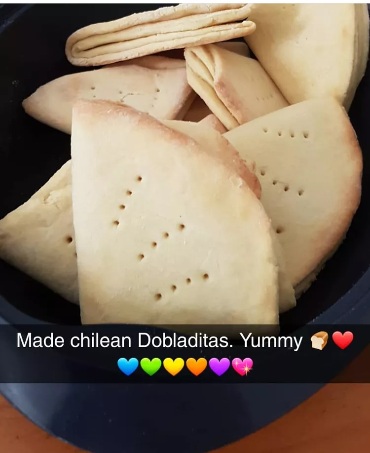

Dobladitas

Description
This is a great recipe for a Chilean bread. They are so easy, ready in a few minutes, and taste heavenly. They are best when they are warm, right from the oven or toasted the next day, with some butter, jelly, or even some guacamole.
Ingredients
- 4 cups all-purpose flour
- 1 teaspoon salt
- 2 teaspoons baking powder
- ½ cup milk
- 1 cup butter, melted
- 3 tablespoons butter, melted
Steps
- Preheat oven to 450 degrees F (230 degrees C). Grease a baking sheet.
- Stir together the flour, salt, baking powder, milk, and 1 cup of melted butter. When the dough begins to pull together, turn it out onto a lightly floured surface; knead until smooth and elastic.
- Roll out the dough to 1/8 inch thickness and cut into 8-inch circles.
Brush the circles with the remaining melted butter.
Fold each circle in half and then in half again, into triangles; press firmly to seal the layers.
Place the rolls on the prepared baking sheet.
- Bake in the preheated oven until golden brown, about 15 minutes.
Serve warm.